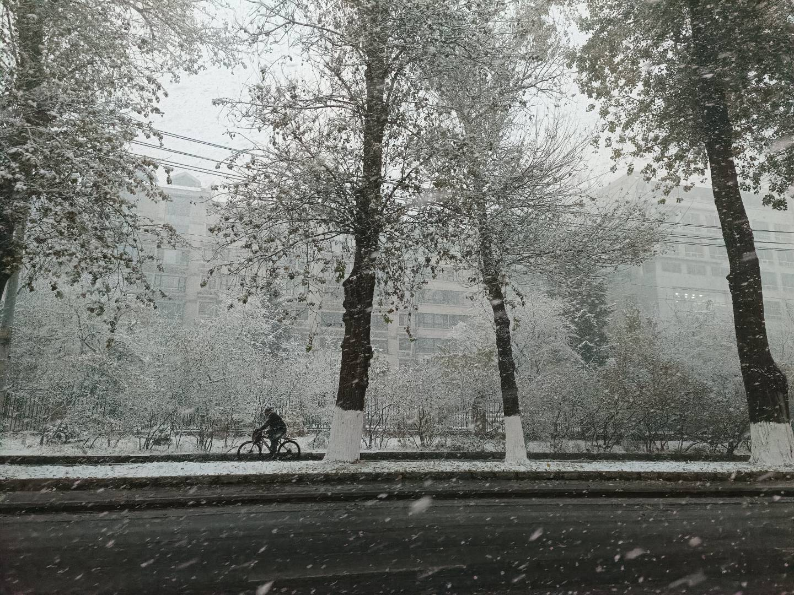

城市绿化与生态
长春是中国著名的"森林城"，城市绿化覆盖率超过40%，街道两旁绿树成荫，公园绿地遍布全城，真正体现了"城在林中，林在城中"的生态理念。

城市森林景观
城市生态介绍
聆听生态建设成果
航拍长春
空中俯瞰绿色长春
四季风光
🌸 春季 - 万物复苏
四月杏花、五月丁香，整座城市沉浸在花香之中

🌳 夏季 - 绿意盎然
南湖公园、净月潭森林公园成为市民避暑胜地

🍁 秋季 - 层林尽染
月潭的枫叶红透，南湖公园的金黄银杏，整座城市仿佛打翻了调色盘，美不胜收。

❄️ 冬季 - 银装素裹
冰雪覆盖的净月潭宛如童话世界，冰雪大世界璀璨夺目，展现北国特有的冰雪魅力。
